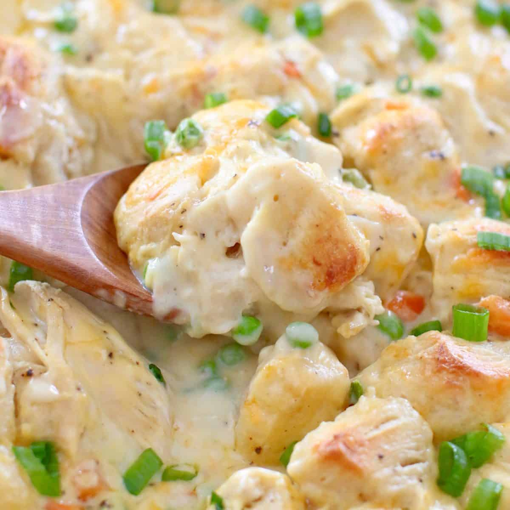
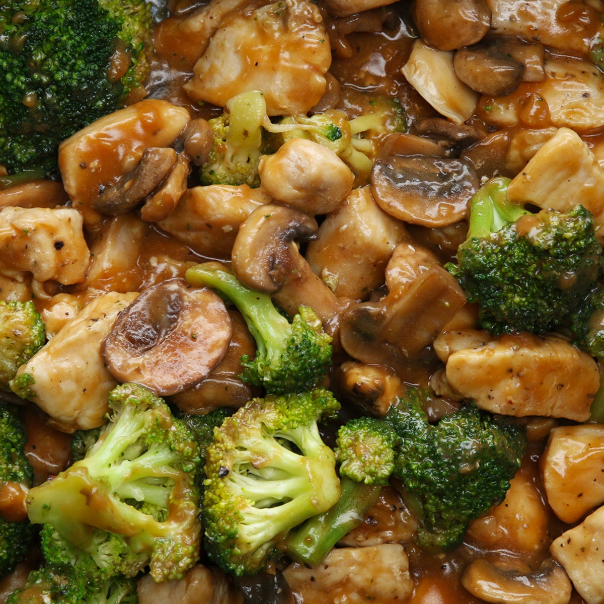

Mac and Cheese
Origin: Northern Europe Source: Recipe Source Category: Main Dish
Macaroni and cheese, commonly known as mac & cheese, is a comfort food staple that has captured the hearts of people all over the world. Originating from Europe and popularized in the United States, this dish consists of elbow macaroni pasta smothered in a creamy cheese sauce. The simplicity of its ingredients—pasta, cheese, and often a touch of butter or milk—belies a rich, complex flavor that has made it a favorite for both quick weeknight dinners and festive holiday gatherings.
Recipe Ingredients
- Macaroni
- Butter and flour
- Milk
- Large egg
- Cheese
- Seasonings
- Bread crumbs
Recipe Steps
- Preheat oven to 375°. Grease a 13"x9" baking dish with butter. In a large pot of boiling salted water, cook macaroni, stirring occasionally, until al dente, 5 to 6 minutes. Drain.
- In a large saucepan over medium heat, melt 1 stick butter. Sprinkle flour over and cook, stirring, until slightly golden, 2 to 3 minutes. Pour in milk and whisk until combined. Add mustard powder; season with salt and pepper. Bring to a simmer over medium-high heat and cook, stirring, until sauce starts to thicken, about 2 minutes.
- Remove pan from heat and whisk in cheddar, Gruyère, and 1 cup Parmesan until melted and smooth. Stir in macaroni and transfer to the prepared dish.
- In a small bowl, combine panko, oil, and remaining 1/2 cup Parmesan. Sprinkle over macaroni; season with more pepper.
- Bake mac and cheese until bubbly and golden, 25 to 30 minutes. Let cool for 10
Chicken and Biscuits Bake
Origin: Unknown Source: Recipe Source Category: Main Dish "Chicken & Biscuits" is a comfort food classic that's a staple in Southern cuisine but loved all over the United States and beyond. This dish pairs tender, juicy chicken—often fried but occasionally roasted or boiled—with soft, flaky biscuits. It's a culinary symphony of textures and flavors: the crispy exterior of the chicken, the succulent meat within, and the buttery softness of the biscuit combine to make each bite an experience to savor.
Recipe Ingredients
- All-purpose flour
- Baking powder
- Granulated sugar
- Salt
- Unsalted butter
- Whole milk
Recipe Steps
- Preheat oven to 350˚F (180˚C).
- In a large pot over medium-high heat, melt the butter.
- Add the onion, stir until softened. About 1 minute.
- Whisk in the flour, stirring constantly to prevent the flour from browning. About 1 minute.
- Whisk in the chicken broth, salt, and pepper. Continue to whisk until no lumps remain.
- Whisk in the heavy cream. Bring to a light simmer until the sauce has thickened slightly. Test for additional salt/pepper.
- Add the mixed vegetables and shredded chicken, stir until fully incorporated.
- Transfer to a 9x13-inch (23x33 cm) baking dish.
- Evenly top with 12 pieces of biscuit dough (you will have extra biscuits, which can be baked off separately).
- Bake in a preheated oven for 20 minutes, until the biscuits are golden and the gravy mixture is bubbling.
Chicken & Veggie Stir-Fry
Origin: China Source: Recipe Source Category: Main Dish Chicken & Veggie Stir-Fry is a quintessential dish that perfectly embodies the art of quick and healthy cooking. Originating from the diverse culinary landscapes of Asia, this stir-fry is a delectable amalgamation of tender chicken pieces and a colorful medley of vegetables—all brought to life with a harmonious blend of spices and sauces.
Recipe Ingredients
- Chicken breast
- Peper
- Broccoli florets
- Salt
- mushroom
- oil
Recipe Steps
- In a large pan on medium-high heat, add 1 tablespoon of oil. Once the oil is hot, add chicken, season with salt and pepper, and sauté until cooked through and browned. Remove cooked chicken from pan and set aside.
- In the same pan, heat 1 tablespoon of oil and add mushrooms. When the mushrooms start to soften, add broccoli florets and stir-fry until the broccoli is tender. Remove cooked mushrooms and broccoli from the pan and set aside.
- Add 1 tablespoon of oil to the pan and sauté garlic and ginger until fragrant. Add the remaining sauce ingredients and stir until smooth.
- Return the chicken and vegetables to the saucy pan, stir until heated through.
- Serve with hot rice or noodles.
Additional Mac and Cheese images